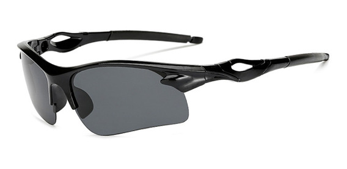
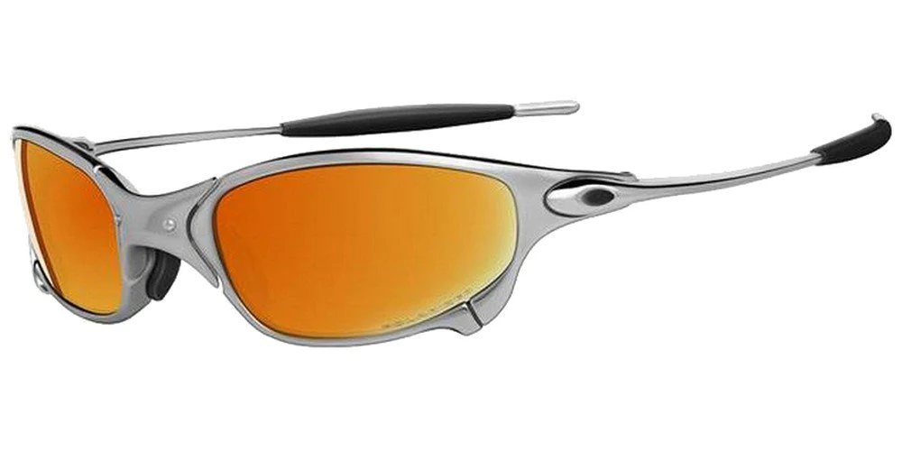
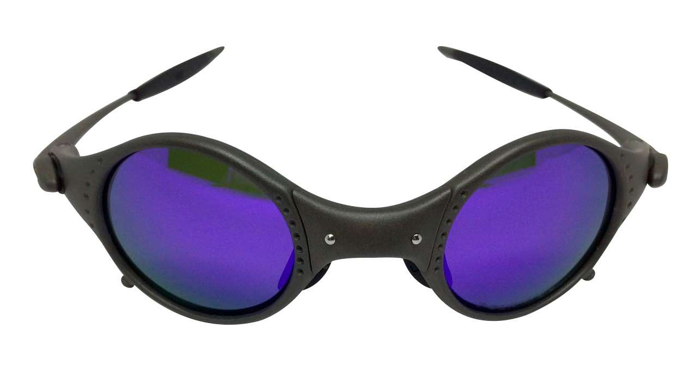
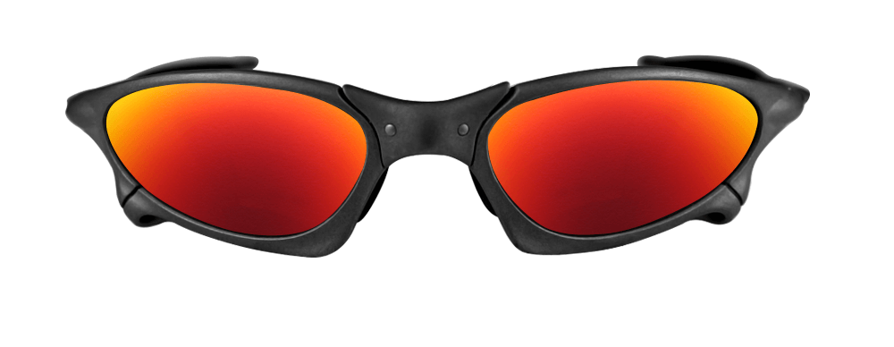
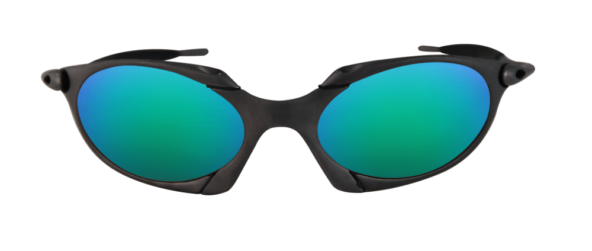
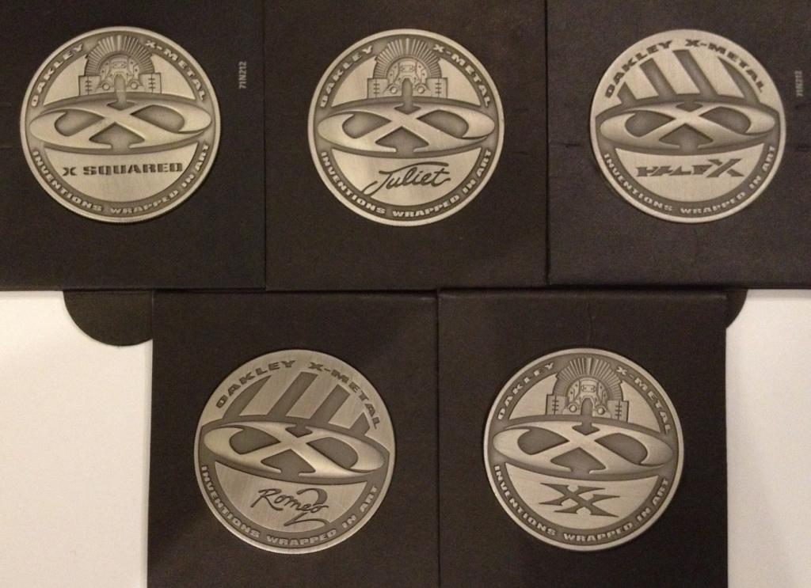
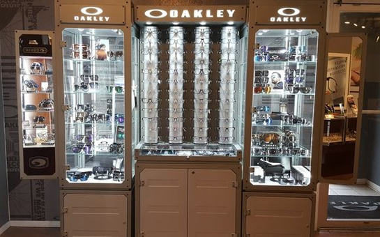
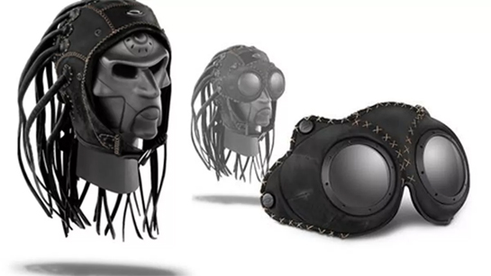

HALF X
JULIET
MARS
PENNY
ROMEO
ROMEO 2

X METAL

Talvez onde a oakley mais teve sucesso dentre todos os produtos, com sucesso
imenso nas periferias do Brasil e com aparições muito marcantes em filmes, como
missao impossivel, x-men, clube da luta entre outros. As lupas como são popularmente
chamada sé desejado por muitos já que não existe a fabricação desses oculos, uma vez
isso acontecendo elas se tornam muito raras, com uma imensa gama de replicas
espalhados por todo o Brasil.
Adquirindo essas lupas junto com a Oakley
na coleção x-metal, vinha junto ao oculos um
medalhao para o respectivo oculos comprado,
uma das curiosidades que a fazem unica.
Em 1997, a marca lançou a linha X-Metal, que apresentava óculos criados com uma liga
metálica especial, obtida através da fusão de alumínio com um material chamado de “O-Matter”,
lentes polarizadas ultra resistentes e acabamento da ponta e das hastes (as borrachinhas)
feitas com o exclusivo Unobtanium®. Essa linha foi amplamente utilizada por atletas como
Michael Jordan, Ichiro Suzuki e Juan Pablo Montoya.
Definitivamente os óculos são a grande paixão, obsessão e fonte de inspiração da marca
americana. Há mais de quatro décadas a OAKLEY tem liderado o caminho em maximizar
o estilo das lentes e o >desempenho técnico. As lentes polarizadas da OAKLEY são projetadas
com um processo de infusão líquida que une as moléculas do filtro polarizador e da lente,
eliminando a distorção encontrada nas tecnologias convencionais.

Medalhões Oakley
É por isso que as lentes SOLFX Transitions™ são projetadas para escurecer e clarear
automaticamente. A marca registrou aproximadamente 900 patentes (que vão desde
proteção para lentes de óculos até peças específicas da haste), incorporando alta
tecnologia na sua linha de óculos. Hoje em dia a empresa utiliza desde materiais como
Titânio, Magnésio, Acetato, até Kevlar na confecção de seus óculos.

Patentes Oakley
Em 2008, a marca americana lançou uma polêmica linha de produtos. A Oakley não queria, definitivamente, discrição. A marca
introduziu no mercado americano uma touca repleta de dreadlocks, tipo de penteado muito comum entre os cantores de reggae,
e batizou-a de Oakley Medusa Hat.
O design da touca da medusa oakley, embora chamativo, é simples: trata-se de uma touca comum,
feita de couro e com um forro de espuma super densa e macia. Já o cinto é ajustável e pode ser regulado de acordo com seu formato,
encaixando perfeitamente à cabeça tanto dos homens quanto das mulheres.
Os dreadlocks também são bem resistentes,
confeccionados em couro e com rebite para fixar os óculos, enquanto a customização tem costuras e detalhes interessantes
e o símbolo da marca no topo, para mostrar a ostentação em vestir um produto exclusivo.

Medusa Hat com oculos
Figueiredo's entreprise